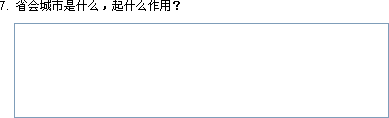

| 简答题 |
|
简答题会显示一个文本输入框，测试可以输入题的答案。与其它题型不同的是，它是个主观题，不参与试题评分，参考答案仅用来参考用。 您要建立一个简答题，请按如下方法： Ø 题目 您可以在这里设定题的题目，它不可以为空。 Ø 答案 您可以在这里设定参考答案，如果试题属性->试题设置的[答题后显示正确答案]，它在做完后显示出来，只做为参考用。 Ø 其它设置 图片：您可以给当前试题添加一个图片，它将显示在试题的右侧；也可以去除一个已添加的图片。 声音：此功能仅当参数设置中设置[试题窗体可以设置试题声音]才能使用。您可以为当前试题设定一个声音文件，且可以设置是否为自动播放。若设置为自动播放，则在做到此题时声音自动被播放 指定的次数，反之会显示一个声音播放工具体，测试者可以自已控制播放。 与简答题对应的试题效果，如下图所示：  |